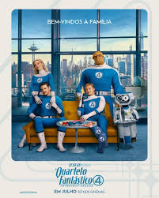
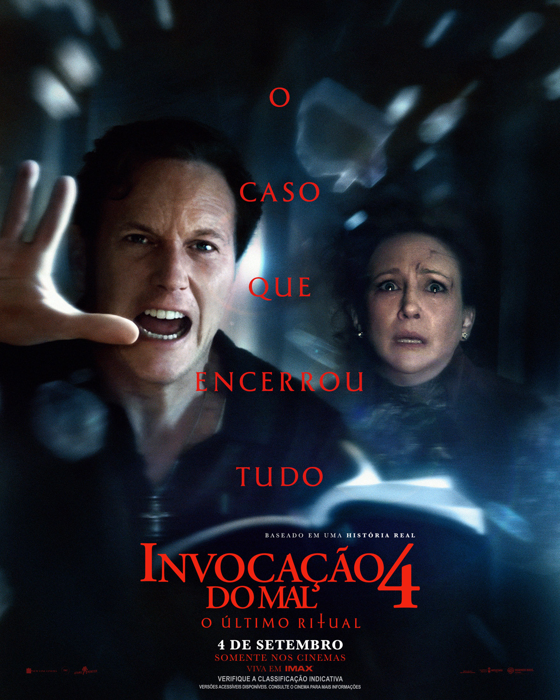
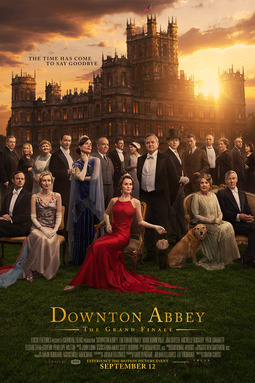
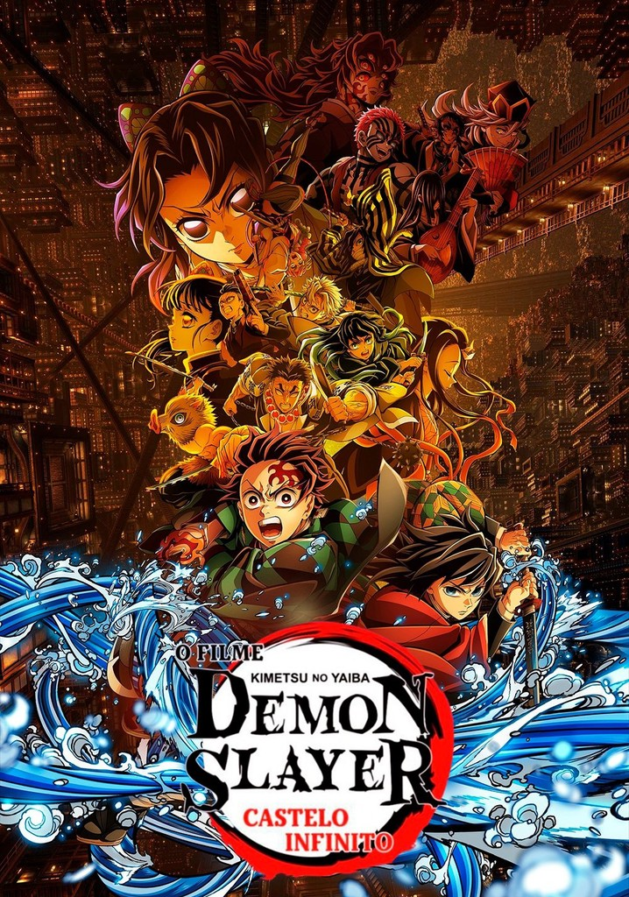

Veja os filmes em cartaz:
-  Quarteto Fantástico
- Uma Sexta Feira Mais Louca Ainda
-
 Interestelar (Relançamento)
Interestelar (Relançamento)
-  Invocação do Mal 4: O Último Ritual
-  Downton Abbey – O Grande Final
-  Demon Slayer: Kimetsu no Yaiba
- A Sogra Perfeita 2
- Uma Batalha Após A Outra
Clique em um filme para ver a sinopse.